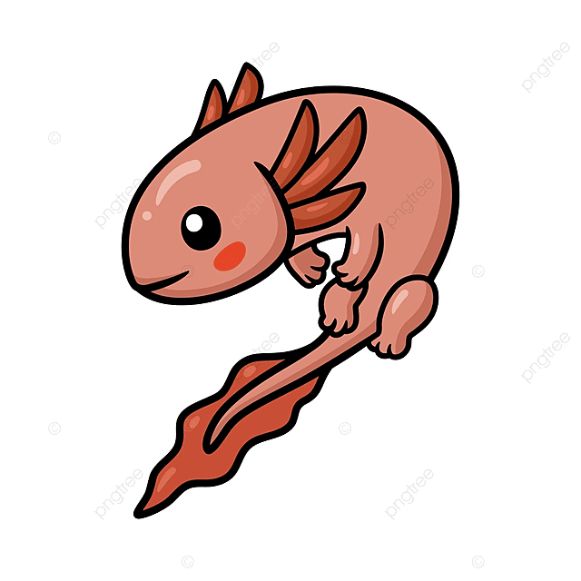

Axolotilandia
Características de los axolotes
Hecho por Luz Areli
Cosas que comen los axolotes
- Microalgas
- Alga espirulina
- Nauplios de artemia salina
- Lombriz de tierra
Enfermedades usuales de los axolotes
- Origen parasitaria
- Origen bacteriano
- Origen bacteriano
Mitología
En la mitología mexica, el ajolote (del náhuatl atl, agua y xólotl, monstruo) significa monstruo acuático y es la advocación acuática del dios Xólotl, hermano gemelo de Quetzalcoatl; sin embargo, el dios Xólotl se hizo monstruoso a causa del nacimiento.
Anatomía
El ajolote posee características de la salamandra, mide en promedio 23 centímetros, su cuerpo es gelatinoso, tiene cuatro patas, una cola larga, ojos pequeños y una boca grande de apariencia sonriente.
Conservación
Hay que sembrar especies vegetales en la zona, acondicionar el entorno natural y cuidar de los axolotes. Lo cierto es que Xochimilco es mucho más que mariachi y trajineras, se trata del hogar de una de las especies más maravillosas de nuestro país.
Lee más aquíFormulario de identificación
¿Qué edad tiene el axolote?